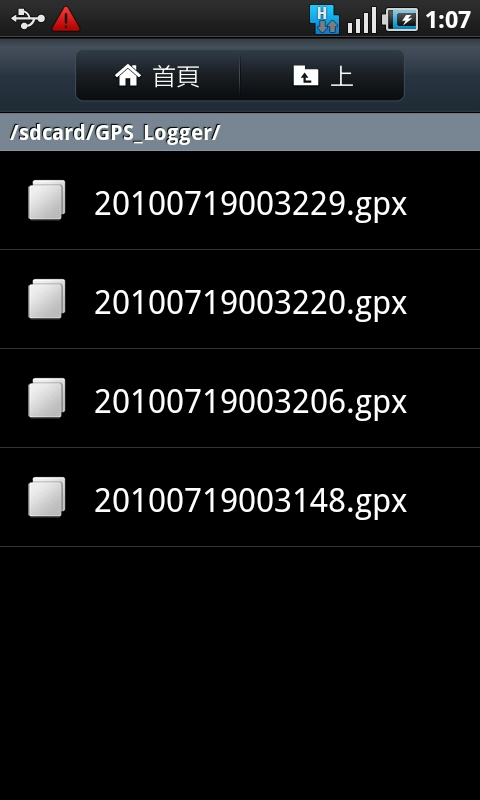

利用 Android 手機記錄 GPS 行程

愛好戶外活動的使用者，有沒有想過利用智慧型手機內置的 GPS 晶片，記錄自己某一段旅程的路線，以便日後整理，併供遊記撰寫時參考之用？其實只需安裝指定的軟體，Android 智慧型手機就能搖身一變而成「GPS 行程記錄裝置」，能夠為您在旅途上自動記錄旅程路徑，並輸出為 GPX 檔案，這格式是較常見的 GPS 路徑記錄檔。
透過網路，我們可以找到不止一款適用於 Android 手機的 GPS 路徑記錄軟體，以下就為各位介紹名為 GPS Logger for Android 的軟體，這個專案不僅是以開放源碼的方式對外釋出，並且在眾多路徑記錄軟體當中，亦是操作介面較為簡便的一款。
軟體名稱：GPS Logger for Android
最新版本：0.2
軟體授權：GNU General Public License Ｖersion3（GPLv3）
系統支援：Android
官方網站：https://gpsloggerforand.sourceforge.net/
使用者透過 GPS Logger for Android 官方網站所下載的 Android 軟體為 APK 檔案，透過 Android 手機中的檔案總管開啟 APK 檔案，便可選擇將軟體安裝至 Android 手機。不過，事前使用者要確保 Android 手機的【設定】中的【應用程式】介面，當中「未知的來源」的核取方塊已勾選。執行 GPS Logger for Android 軟體後，會見到如下圖的操作介面。
使用者只須點選【Start Recording】，GPS Logger for Android 軟體便會開始記錄 GPS 路徑的程序。軟體畫面亦會出現正在建立的 GPX 檔案名稱。
當使用者繼續行程的時候，軟體亦會繼續記錄有關路徑，並且會透過手機不斷更新使用者的所在位置。
使用者完成行程的時候，只須點選【Stop Recording】，軟體便會停止路徑記錄。
儲存了 GPS 路徑的 GPX 檔案，預設會被儲存於 Android 手機中記憶卡的「GPS_Logger」資料夾裡。使用者可透過記憶卡，將 GPX 檔案複製至電腦裡。

透過電腦軟體讀取 GPX 檔案
取得記錄了 GPS 路徑的 GPX 檔案後，使用者便可利用一些電子地圖軟體，讀取這些 GPX 檔案，軟體會將透過 GPX 檔案取得的路徑資料，在電子地圖上反映出來。如此一來，使用者在行程當中經過哪些景點，便可一目了然。
在這些電子地圖軟體裡，MyTourbook 是其中一款能讀取 GPX 檔案，並且在電子地圖上顯示有關路程的開源軟體。這一款軟體本身以開放原始碼的方式開放出來，並已支援 Windows、Mac OS X 及 GNU/Linux 三大作業平台。下文筆者會以 MyTourbook 10.7 在 Mac OS X 上的版本作示範說明。
軟體名稱：MyTourbook
最新版本：10.7
軟體授權：GNU General Public License
系統支援：Windows、Mac OS X、GNU/Linux
官方網站：https://mytourbook.sourceforge.net/
首次執行 MyTourbook，會有一個視窗彈出來，提醒使用者必須先建立使用者「人 （People）」的項目。
點選【OK】後，便會出現「人」的設定介面，使用者可點選【Add】 新增一個「人」的項目。
使用者必須填上「人」項目當中的名字，亦即是「First Name」欄位，其餘欄位可依喜好填或不填，完成後點選【OK】。
使用者可選擇加入多個不同「人」的項目，以及利用 MyTourbook 儲存多重使用者的行程記錄。完成新增「人」的記錄後，便可正式使用 MyTourbook 了。
要載入從 Android 手機取得的 GPX 檔案，先透過 MyTourbook 功能表中的【File】選取【Import Tours from File】。
再選取已儲存的 GPX 檔案。
已選取 GPX 檔案當中的路徑資料便會在 MyTourbook 中顯示出來，軟體甚至能顯示路徑所在位置的電子地圖。
如要儲存路徑資料，則可用滑鼠右鍵點擊一下已載入的行程項目，然後選擇【Save Tour】。
再點選「Save Tour（s）」視窗中的【OK】鍵，便可將路徑資料儲存於 MyTourbook 了。
您也許有興趣閱讀以下文章:
- 利用 Android 手機記錄行程及途經點 - 2010-10-01